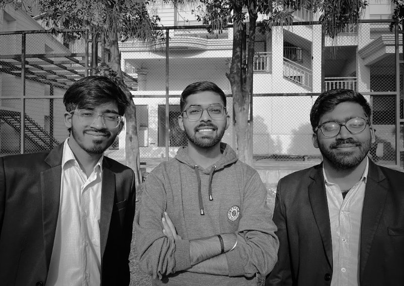
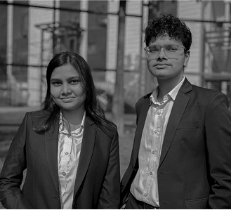
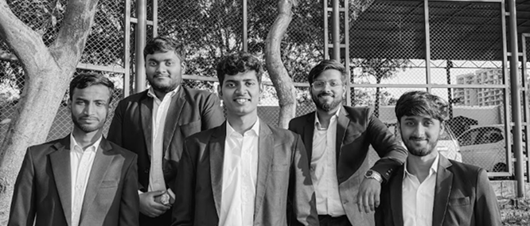
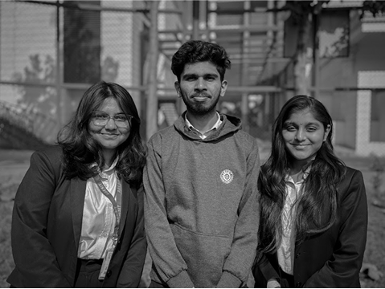
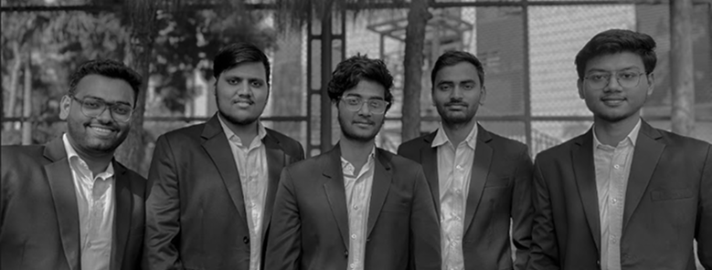

Our Team

The "Harry Potter, Neville Longbottom, and Ron Weasley" trio. The fearless leader (Harry), the unexpected hero (Neville), and the loyal strategist (Ron), guiding the team through every challenge like a Triwizard Tournament. Together, they make sure no stone (or golden egg) is left unturned.
Meet our Hermione—the Tech & Design Sorceress of Hacknovate 6.0! As Tech Lead, Social Media Lead, and Design Contributor, she crafts an experience as flawless as Wingardium Leviosa, ensuring every detail is pure magic!
Meet Skeeter—our Social Media Lead and the (way more ethical) Rita Skeeter of Hacknovate! With a Quick-Quotes Quill and a sharp strategy, he spreads the magic far and wide!

The "Remus Lupin and Ginny Weasley" duoRemus brings thoughtful, strategic designs as sharp as a werewolf’s instincts, while Ginny adds flair and precision, making everything as vibrant as a Quidditch match.
Every great hackathon needs a sharp mind with an edge, and *Malfoy* brings his signature mastery to the technical team of Hacknovate 6.0. With the cunning of a true strategist and the precision of a perfectly brewed potion, he ensures the tech runs flawlessly—because in his world, excellence isn’t a choice, it’s a legacy.

Like the Gringotts wizards guarding the vaults, this powerhouse team ensures Hacknovate 6.0 is backed by the strongest alliances. With the negotiation skills of Fred & George Weasley, the strategy of Percy Weasley, and the charm of a well-cast Confundus Charm, they bring in the best sponsors and partnerships. Their magic keeps the event grand, ensuring every galleon counts!
Just as Dumbledore’s Army stood united against the Dark Arts, our team of skilled wizards and witches—masters of logic, creativity, and innovation—have come together to weave magic with code. Together, we stand as the guardians of Hacknovate 6.0
The "Minerva McGonagall and Molly Weasley" duoThe powerhouse pair who keep the gears turning, ensuring everything runs as precisely as a Time-Turner schedule. They’re the backbone of the team, casting Impervius on chaos.
The "Luna Lovegood and Rubeus Hagrid" duoLuna brings the whimsical creativity, dreaming up ideas as unique as a Crumple-Horned Snorkack, while Hagrid adds heart and passion, crafting content as warm and magical as a Care of Magical Creatures lesson.

Bringing wisdom, creativity, and skill to Hacknovate 6.0, this trio ensures a flawless tech experience. *Lovegood* adds imagination and fresh ideas, making innovation feel effortless. *Weasley, with his cleverness and quick wit, keeps things running smoothly with sharp fixes and fun. **Tonks*, ever-adaptable, tackles challenges with rebellious brilliance. Together, they make tech feel like magic!
Every legendary event needs master storytellers, and our Social Media Team ensures Hacknovate 6.0 isn't just an event—it’s an experience that echoes across the wizarding and Muggle worlds! As the Rita Skeeters (but way more ethical!), they wield their Quick-Quotes Quills to capture every spellbinding moment, ensuring no magic goes unnoticed. Like Lee Jordan, they bring electrifying commentary, making every update feel like the finals of the Triwizard Tournament. With the vision of Xenophilius Lovegood, they weave narratives that aren’t just informative but immersive, drawing everyone into the enchantment. From captivating posts to dynamic storytelling, they make sure Hacknovate isn’t just seen—it’s felt, remembered, and celebrated long after the final spell is cast!
Like Remus Lupin guiding young wizards, he built the Hacknovate 6.0 Discord Realm, the backbone of our online hackathon. As the Master of the Floo Network, he ensures smooth communication, seamless collaboration, and an enchanting experience for all. His wizardry keeps our digital Hogwarts alive!
